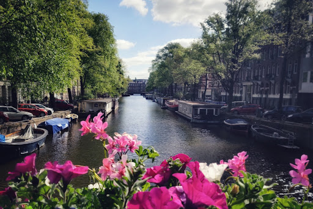
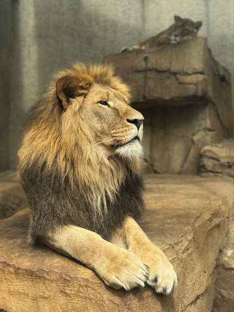
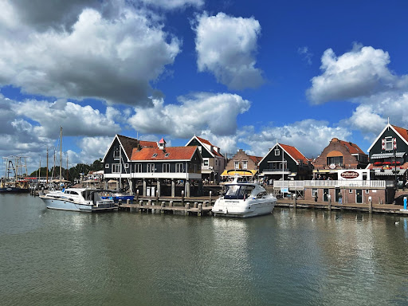
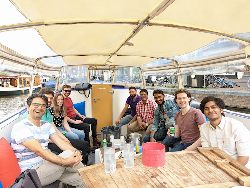

Dhruv Arora - Optiver
Howdy fellas! I am Dhruv, a final year undergrad in the department of CSE. I hail from Indore, the cleanest city in the country and the exact opposite is reflected in my room here at hostel 9. I listen to a lot of music - from 70s rock to 00s rap to the recent pop hits, I’ve explored a lot. I used to play some football in high school, but recent experiments suggest my goal-scoring days are over. I do enjoy table tennis and am always open to a match. I am a counter strike addict, so if I’m not answering your calls I probably am carrying my friends there (:
I am a programmer at heart and my language of choice is C++. I love working with networking and multithreading applications and almost nothing makes me happier than writing the most efficient code possible for a problem. This love for C++ and optimization is one of the main reasons I spent the last summer in Amsterdam, working for Optiver. If you don’t know, Optiver is a proprietary trading firm and market maker with multiple offices worldwide. If you do not know what that means, it’s more than okay. I did not know much either when I was in your position. I got to know a lot about Optiver through their presentation - which I strongly recommend attending.
Last year, Optiver offered two roles - developer and trader. Being an inherently tech-oriented person, I was more interested in the developer role. They focused on C++ in their tests and that played to my strengths as well as my interests. Both roles were on-site in Amsterdam, and who does not want an all-expense-paid trip to Europe in their summer vacation? They offered a very generous and competitive salary and frankly, everyone I knew was very excited about this opportunity. You don’t have to be a mind reader to know that almost everyone had Jane Street and Optiver in their top preferences. Personally, I preferred Optiver more than Jane Street just on the basis of the location (Europe >> Hong Kong let’s go).
As day 1 creeped closer and the anxiety and uncertainty scared the bejesus out of me, I decided to spend most of my time preparing for the plethora of interviews and tests I was going to go through. The major focus was coding tests - me and my friends decided to pick one online preparation platform and exhaust questions from all categories there. Our platform of choice was interviewbit, just because it had the minimum number of questions per category but you do you xD. If you’re going for SDE interns, it does make sense to do something on these lines. You do not want to reinvent the wheel in a timed test or an interview. And as hacky as it may sound, the ‘categories’ on these platforms are the general techniques that companies look for in a candidate.
My 2 cents on tests and interviews - prepare well and prepare a lot but once day 1 strikes, just relax. You will fuck up some tests and interviews - it is inevitable, all of us did. Learn from your mistakes but do not self hate - you won’t have time for that. Talk to interviewers like they are your friends - be direct and frank but of-course be respectful.
The selection procedure at Optiver was very transparent. You had to go through a coding test - which focused a lot on the quality of your code, not just the efficiency. Your performance in the coding test and your resume determined if you were shortlisted for the interviews. There were 2 interview rounds and the questions involved general system design and algorithms. One of these interviews also encompassed a code-review for your coding test - this is where the focus on code quality kicked in. The code-review was very similar to how code-reviews work in the firm in-general and is a nice experience to gain. If you performed satisfactorily in these interviews, you go through an HR interview and hopefully land the internship. There’s no specific preparation you can do for the company. If you’re a good fit, they will notice you (:
I was extremely happy and grateful to see my name in the company’s selection list when the day 1 results were declared. I was exhausted by the end of all the interviews and tests and felt like it was all worth it. This was August last-year and COVID was in full-force back then, so the nature of the internship was still unclear. We were all hoping for an offline internship and thankfully the travel restrictions were lifted as April 2022 approached. Tickets were booked, a Schengen visa was stamped on my passport and I was ready to fly to Amsterdam.
I flew from Indore->New Delhi->Abu Dhabi->Amsterdam, an exhausting journey it was. I was joined by more co-interns at New Delhi and by further more at Abu Dhabi. When we landed at Schipol airport, taxis were already waiting for us outside. The weather was pleasant and the cool breeze was relaxing my tired self. We were taken to the hotel at 160+ kmph through picturesque Dutch highways in a black Mercedes. Everything felt new and exciting. In no time we reached Zoku, the hotel we were staying at. This room was going to be my abode for the next couple months. I arranged my closet, checked out the kitchenette and the bed, called home and rested for a while - the internship began the next day.
The first couple weeks involved lectures and training - we got to know a lot about trading and the firm - its history, culture and principles. By the end of two weeks, I started getting familiar with the place, the people, the food, the transportation, etc. When we arrived in Amsterdam, we were given the option to request a company-paid public transportation card or a company-paid rented bicycle. All of us chose the bicycle - which was a bad decision for me personally. I ended up using a lot of public transport to commute to work and explore the city.
The third week began and it was time to join my team for some actual software development work. I had 5 weeks with the team and I wanted to make the best of them. I worked on a data-analysis tool for a couple weeks, modified a trading strategy for the next two and worked on profiling and latency reduction in a certain component in my last week. I made friends with amazing people, I learned from enthusiastic people, I played table tennis with talented people, I went on a boat tour of Amsterdam with my new friends, I watched my work go into production and add value to the company, I felt like I belonged here.
During these 5 weeks, never once did I feel like I was just interning at Optiver - I felt like I worked here. When the internship ended and I had to fly back home, a part of me wanted to stay and keep working in Amsterdam. I could see myself working at Optiver full time. We are all talented individuals and where we work and what we do is a big part of our lives but not everyone can work everywhere. I think this is what internships are about - finding out if you are compatible with a firm and will help each other grow? I’m glad I found that at Optiver.
This is my story. With no specific preparation, I secured a job in a continent I admire. With no prior knowledge, I got into a job which exactly aligned with my interests and abilities. And with no prior planning, I landed in a team where I functioned at my best and made great friends. You can say I was talented, I made all the right decisions and I am amicable (many people will deny this btw). Or you can say I was in the right place at the right time. But whatever it was, I ended up in a situation that worked out for me.
 Call it hopeless romanticism - which you should since that’s the running metaphor in the last 2 paragraphs - but I know all of y’all reading this will also find some place where you feel like you belong and you’ll be happy there. You’ll find something you can see yourself doing for more than just a few months. Be true to yourself, work hard and prepare a lot but at the end of the day, relax. Stressing about the future will only make your present self miserable. Go through the internship season, through tests and interviews, through life with hope - everything will work out eventually (: